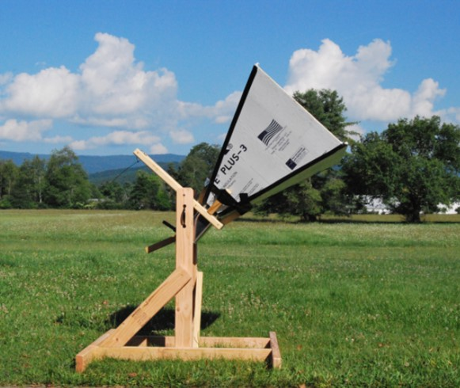

| Home |
| Contact |
| Projects |
| Resources |
| Partners |
ProjectsOne of the main goals of Open Source Radio Telescopes is to provide resources and documentation to students, teachers, and hobbyists who are interested in building radio telescope projects. Here is a list of projects that OSRT members have created instructions and documentation for:Small Loop Antenna |

|
|
This simple loop antenna is a great beginner’s project to learn about electronics as well as astronomy. It may be used to monitor Sudden Ionospheric Disturbance (SID) events caused by solar activity. Visit this page to learn more about how to build your own Small Loop Antenna, and to discover curricula and resources for yourself or your classroom! Small Loop Antenna |
Horn Antennas |
 |
|
Horn antennas are also great introductory radio astronomy projects. This type of antenna is capable of detecting Neutral Hydrogen emissions from the Milky Way! Several versions of the horn antenna design have been developed and tested by OSRT members and Research Experience for Teachers participants. The instructions on how to build the Horn Antenna and use it in your classroom can be found here at the new Digital Signal Processing in Radio Astronomy (DSPIRA) website. You can also visit their old site, which has similar information in a slightly different format: https://wvurail.org/dspira/labs/ |
Itty Bitty Radio Telescope (IBT) |

|
|
The Itty Bitty Radio Telescope is a project of the National Radio Astronomy Observatory. It is probably the simplest and quickest telescope to build, and can be used to detect blackbody radiators like the Sun and the human body. To learn more about the IBT, check out this webpage: Itty Bitty Radio Telescope |